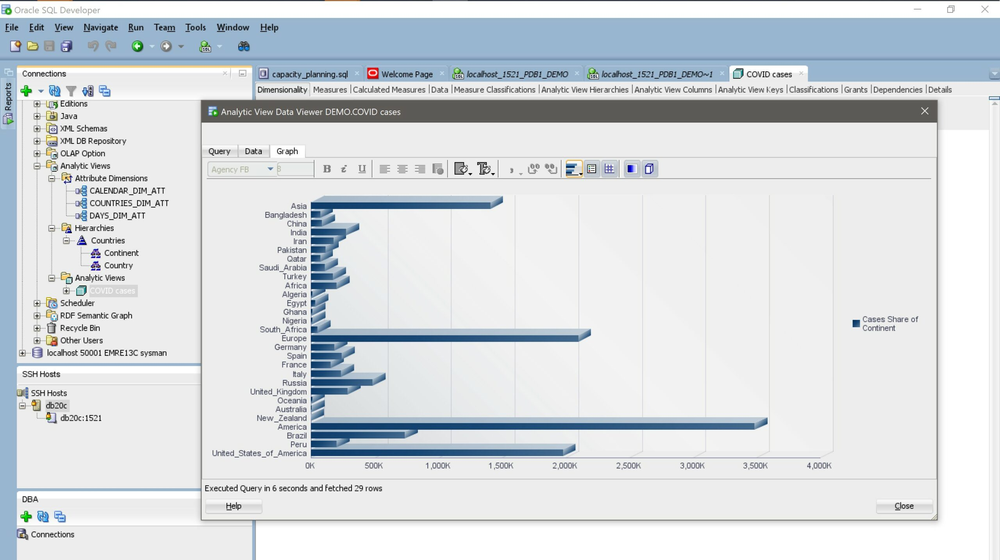

This was first published on https://www.dbi-services.com/blog/oracle-12c-analytic-views/ (2020-06-14)
Republishing here for new followers. The content is related to the versions available at the publication date.
.
Advocates of NoSQL can query their structures without having to read a data model first. And without writing long table join clauses. They store and query a hierarchical structure without the need to follow relationships, and without the need to join tables on a foreign key name, in order to get a caption or description from a lookup table. The structure, like an XML or JSON document, provides metadata to understand the structure and map it to business objects. The API is simple ‘put’ and ‘get’ where you can retrieve a whole hierarchy, with aggregates at all levels, ready to drill-down from summary to details. Without the need to write sum() functions and group by clauses. For analytics, SQL has improved a lot with window functions and grouping sets but, despite being powerful, this makes the API more complex. And, at a time were the acceptable learning curve should reach its highest point after 42 seconds (like watching the first bits of a video or getting to the stackoverflow top-voted answer), this complexity cannot be adopted easily.
Is SQL too complex? If it does, then something is wrong. SQL was invented for end-users: to query data like in plain English, without the need to know the internal implementation and the procedural algorithms that can make sense out of it. If developers are moving to NoSQL because of the complexity of SQL, then SQL missed something from its initial goal. If they go to NoSQL because “joins are expensive” it just means that joins should not be exposed to them. Because optimizing access paths and expensive operations is the job of the database optimizer, with the help of the database designer, but not the front-end developer. However, this complexity is unfortunately there. Today, without a good understanding of the data model (entities, relationships, cardinalities) writing SQL queries is difficult. Joining over many-to-many relationships, or missing a group by clause, can give wrong results. When I see a select with a DISTINCT keyword, I immediately think that there’s an error in the query and the developer, not being certain of the aggregation level he is working on, has masked it with a DISTINCT because understanding the data model was too time-consuming.
In data warehouses, where the database is queried by the end-user, we try to avoid this risk by building simple star schemas with only one fact tables and many-to-one relationships to dimensions. And on top of that, we provide a reporting tool that will generate the queries correctly so that the end-user does not need to define the joins and aggregations. This requires a layer of metadata on top of the database to describe the possible joins, aggregation levels, functions to aggregate measures,… When I was a junior on databases I’ve been fascinated by those tools. On my first Data Warehouse, I’ve built a BusinessObjects (v3) universe. It was so simple: define the “business objects”, which are the attributes mapped to the dimension columns. Define the fact measures, with the aggregation functions that can apply. And for the joins, it was like the aliases in the from clause, a dimension having multiple roles: think about an airport that can be the destination or the origin of a flight. And then we defined multiple objects: all the airport attributes in the destination role, and all the airport attributes as an origin, were different objects for the end-user. Like “origin airport latitude”, rather than “airport latitude” that makes sense only after a join on “origin airport ID”. That simplifies a lot the end-user view on our data: tables are still stored as relational tables to be joined at query time, in order to avoid redundancy, but the view on top of that shows the multiple hierarchies, like in a NoSQL structure, for the ease of simple queries.
But, as I mentioned, this is the main reason for SQL and this should be done with SQL. All these descriptions I did in the BusinessObjects universe should belong to the database dictionary. And that’s finally possible with Analytic Views. Here is an example on the tables I’ve created in a previous post. I am running on the 20c cloud preview, but this can run on 18c or 19c. After importing the .csv of covid-19 cases per day and countries, I’ve built one fact and one snowflake-dimension tables:
create table continents as select rownum continent_id, continentexp continent_name from (select distinct continentexp from covid where continentexp!='Other');
create table countries as select country_id,country_code,country_name,continent_id,popdata2018 from (select distinct geoid country_id,countryterritorycode country_code,countriesandterritories country_name,continentexp continent_name,popdata2018 from covid where continentexp!='Other') left join continents using(continent_name);
create table cases as select daterep, geoid country_id,cases from covid where continentexp!='Other';
alter table continents add primary key (continent_id);
alter table countries add foreign key (continent_id) references continents;
alter table countries add primary key (country_id);
alter table cases add foreign key (country_id) references countries;
alter table cases add primary key (country_id,daterep);
The dimension hierarchy is on country/continent. I should have created one for time (day/month/quarter/year) but the goal is to keep it simple to show the concept.
When looking at the syntax, it may seem complex. But, please, understand that the goal is to put more in the static definition so that runime usage is easier.
I’ll describe the Country/Continent dimension. It can be in one table (Star Schema) or multiple (Snowflake Schema). I opted for snowflake to show how it is supported since 18c. In 12c we have to create a view on it as the using clause can be only a table or view identifier.
create or replace attribute dimension COUNTRIES_DIM_ATT
using COUNTRIES a ,CONTINENTS b join path country_continent on a.CONTINENT_ID=b.CONTINENT_ID
attributes ( a.COUNTRY_ID "Country ID", a.COUNTRY_CODE "Country", a.COUNTRY_NAME "Country name", a.CONTINENT_ID "Continent ID", b.CONTINENT_NAME "Continent")
level "Continent"
key "Continent ID"
member name '#'||to_char("Continent ID")
member caption upper(substr("Continent",1,3))
member description "Continent"
determines ("Continent")
level "Country"
key "Country ID"
member name "Country ID"
member caption "Country"
member description "Country name"
determines ("Country ID","Country", "Country name", "Continent ID", "Continent")
all member name 'WORLD'
/
Let’s take it simply, I have an internal name for my dimension COUNTRIES_DIM_ATT and a USING clause which declares the dimension table and an optional join for snowflake schemas with JOIN PATH. Then I’ve declared the attributes which are the projection of those columns. For this example, I decided to use quoted identifiers for the one that I add in this layer, to distinguish them from the table columns. But do as you want.
The most important here is about levels and dependency. In a star schema, we denormalize the fact tables for simplification (and because it is not a problem as there are no updates, and size is not as large as the fact tables). The metadata we declare here describes the relationships. I have two levels: country and continent. And a many-to-one relationship from country to continent. This is what I declare with the LEVEL and DETERMINES keyword: from all the attributes declared, which ones are functional dependencies of others.
The second important description here is standard naming. In the analytic view, I can query the attributes as columns from the USING clause. But for the ease of querying by simple tools, they will also have standard columns names. Each attribute has as MEMBER NAME (I used the 2-letter country code here which is the COUNTRY_ID primary key in my COUNTRIES dimension table. They have a MEMBER CAPTION as a short name and a MEMBER DESCRIPTION for a longer one. Those are standardized names for each object. The idea is to provide a view that can be used without reading the data model: for each level, the end-user can query the name, caption or the description.
The idea is that those hierarchy levels will be selected in the WHERE clause by a LEVEL_NAME instead of mentioning all columns in GROUP BY clause or PARTITION BY analytic function windowing clause. Note that the’s also an ALL level for the top-most aggregation and we can keep the ‘ALL’ name or a specific one like the ‘WORLD’ I’ve defined here for all countries.
This is the most important metadata is defined by the dimension but we don’t query on dimensions. We can only look at the definitions in the dictionary:
SQL> select * FROM user_attribute_dimensions;
DIMENSION_NAME DIMENSION_TYPE CACHE_STAR MAT_TABLE_OWNER MAT_TABLE_NAME ALL_MEMBER_NAME ALL_MEMBER_CAPTION ALL_MEMBER_DESCRIPTION COMPILE_STATE ORIGIN_CON_ID
____________________ _________________ _____________ __________________ _________________ __________________ _____________________ _________________________ ________________ ________________
COUNTRIES_DIM_ATT STANDARD NONE 'WORLD' VALID 3
CALENDAR_DIM_ATT STANDARD NONE 'ALL' VALID 3
DAYS_DIM_ATT TIME NONE 'ALL' VALID 3
SQL> select * FROM user_attribute_dim_attrs;
DIMENSION_NAME ATTRIBUTE_NAME TABLE_ALIAS COLUMN_NAME ORDER_NUM ORIGIN_CON_ID
____________________ _________________ ______________ _________________ ____________ ________________
DAYS_DIM_ATT Date CASES DATEREP 0 3
COUNTRIES_DIM_ATT Country ID A COUNTRY_ID 0 3
COUNTRIES_DIM_ATT Country A COUNTRY_CODE 1 3
COUNTRIES_DIM_ATT Country name A COUNTRY_NAME 2 3
COUNTRIES_DIM_ATT Continent ID A CONTINENT_ID 3 3
COUNTRIES_DIM_ATT Continent B CONTINENT_NAME 4 3
CALENDAR_DIM_ATT Date CASES DATEREP 0 3
SQL> select * FROM user_attribute_dim_levels;
DIMENSION_NAME LEVEL_NAME SKIP_WHEN_NULL LEVEL_TYPE MEMBER_NAME_EXPR MEMBER_CAPTION_EXPR MEMBER_DESCRIPTION_EXPR ORDER_NUM ORIGIN_CON_ID
____________________ _____________ _________________ _____________ _______________________________ _________________________________ __________________________ ____________ ________________
COUNTRIES_DIM_ATT Continent N STANDARD '#'||to_char("Continent ID") upper(substr("Continent",1,3)) "Continent" 0 3
DAYS_DIM_ATT Day N DAYS TO_CHAR("Date") 0 3
COUNTRIES_DIM_ATT Country N STANDARD "Country ID" "Country" "Country name" 1 3
CALENDAR_DIM_ATT Day N STANDARD TO_CHAR("Date") 0 3
There are more that we can define here. I the same way we want to simplify the PARTITION BY clause of analytic function, thanks to levels, we avoid the ORDER BY clause with ordering in each level. I keep it simple here.
For drill-down analytics, we query on hierarchies.
This is a simple declaration of parent-child relationship between levels:
SQL>
create or replace hierarchy "Countries"
using COUNTRIES_DIM_ATT
( "Country" child of "Continent")
/
Hierarchy created.
This is actually a view that we can query, and the best way to understand it is to look at it.
The definition from the dictionary just reflects what we have created:
SQL> select * FROM user_hierarchies;
HIER_NAME DIMENSION_OWNER DIMENSION_NAME PARENT_ATTR COMPILE_STATE ORIGIN_CON_ID
____________ __________________ ____________________ ______________ ________________ ________________
Countries DEMO COUNTRIES_DIM_ATT VALID 3
SQL> select * FROM user_hier_levels;
HIER_NAME LEVEL_NAME ORDER_NUM ORIGIN_CON_ID
____________ _____________ ____________ ________________
Countries Continent 0 3
Countries Country 1 3
We can also query USER_HIER_COLUMNS to see what is exposed as a view.
but a simple DESC will show them:
SQL> desc "Countries"
Name Role Type
_____________________ _______ _______________
Country ID KEY VARCHAR2(10)
Country PROP VARCHAR2(3)
Country name PROP VARCHAR2(50)
Continent ID KEY NUMBER
Continent PROP VARCHAR2(10)
MEMBER_NAME HIER VARCHAR2(41)
MEMBER_UNIQUE_NAME HIER VARCHAR2(95)
MEMBER_CAPTION HIER VARCHAR2(12)
MEMBER_DESCRIPTION HIER VARCHAR2(50)
LEVEL_NAME HIER VARCHAR2(9)
HIER_ORDER HIER NUMBER
DEPTH HIER NUMBER(10)
IS_LEAF HIER NUMBER
PARENT_LEVEL_NAME HIER VARCHAR2(9)
PARENT_UNIQUE_NAME HIER VARCHAR2(95)
This is like a join on the COUNTRIES and CONTINENTS (defined in the using clause of the attribute dimension) with the attributes exposed. But there are also additional columns that are there with standard names in all hierarchies: member name/caption/description and level information. Because all levels are here, as if we did some UNION ALL over GROUP BY queries.
Additional columns and additional rows for each level. Let’s query it:
SQL> select * from "Countries";
Country ID Country Country name Continent ID Continent MEMBER_NAME MEMBER_UNIQUE_NAME MEMBER_CAPTION MEMBER_DESCRIPTION LEVEL_NAME HIER_ORDER DEPTH IS_LEAF PARENT_LEVEL_NAME PARENT_UNIQUE_NAME
_____________ __________ ____________________________________ _______________ ____________ ______________ _____________________ _________________ ____________________________________ _____________ _____________ ________ __________ ____________________ _____________________
WORLD [ALL].[WORLD] ALL 0 0 0
1 Asia #1 [Continent].&[1] ASI Asia Continent 1 1 0 ALL [ALL].[WORLD]
AE ARE United_Arab_Emirates 1 Asia AE [Country].&[AE] ARE United_Arab_Emirates Country 2 2 1 Continent [Continent].&[1]
AF AFG Afghanistan 1 Asia AF [Country].&[AF] AFG Afghanistan Country 3 2 1 Continent [Continent].&[1]
BD BGD Bangladesh 1 Asia BD [Country].&[BD] BGD Bangladesh Country 4 2 1 Continent [Continent].&[1]
...
VN VNM Vietnam 1 Asia VN [Country].&[VN] VNM Vietnam Country 43 2 1 Continent [Continent].&[1]
YE YEM Yemen 1 Asia YE [Country].&[YE] YEM Yemen Country 44 2 1 Continent [Continent].&[1]
2 Africa #2 [Continent].&[2] AFR Africa Continent 45 1 0 ALL [ALL].[WORLD]
AO AGO Angola 2 Africa AO [Country].&[AO] AGO Angola Country 46 2 1 Continent [Continent].&[2]
BF BFA Burkina_Faso 2 Africa BF [Country].&[BF] BFA Burkina_Faso Country 47 2 1 Continent [Continent].&[2]
...
I’ve removed many rows for clarity, but there is one row for all countries, the deepest level, plus one row for each continent, plus one row for the top summary (‘WORLD’). This is how we avoid GROUP BY in the end-user query: we just mention the level: LEVEL_NAME=’ALL’, LEVEL_NAME=’Continent’, LEVEL_NAME=’Country’. Or query the DEPTH: 0 for the global summary, 1 for continents, 2 for countries. The countries, being the most detailed level can also be queried by IS_LEAF=1. The attributes may be NULL for non-leaf levels, like “Country name” when at ‘Continent’ level, or “Continent” when at ‘ALL’ level.
In addition to the attributes, we have the standardized names, so that the user GUI can see the same column names for all dimensions. I don’t show all countries and I don’t query MEMBER_NAME and MEMBER_CAPTION to get it short here:
SQL>
select MEMBER_NAME,MEMBER_UNIQUE_NAME,LEVEL_NAME,PARENT_LEVEL_NAME,PARENT_UNIQUE_NAME,HIER_ORDER,DEPTH,IS_LEAF
from "Countries" order by DEPTH,HIER_ORDER fetch first 10 rows only;
MEMBER_NAME MEMBER_UNIQUE_NAME LEVEL_NAME PARENT_LEVEL_NAME PARENT_UNIQUE_NAME HIER_ORDER DEPTH IS_LEAF
______________ _____________________ _____________ ____________________ _____________________ _____________ ________ __________
WORLD [ALL].[WORLD] ALL 0 0 0
#1 [Continent].&[1] Continent ALL [ALL].[WORLD] 1 1 0
#2 [Continent].&[2] Continent ALL [ALL].[WORLD] 45 1 0
#3 [Continent].&[3] Continent ALL [ALL].[WORLD] 101 1 0
#4 [Continent].&[4] Continent ALL [ALL].[WORLD] 156 1 0
#5 [Continent].&[5] Continent ALL [ALL].[WORLD] 165 1 0
AE [Country].&[AE] Country Continent [Continent].&[1] 2 2 1
AF [Country].&[AF] Country Continent [Continent].&[1] 3 2 1
BD [Country].&[BD] Country Continent [Continent].&[1] 4 2 1
BH [Country].&[BH] Country Continent [Continent].&[1] 5 2 1
A row can be identified by the level (LEVEL_NAME or DEPTH) and its name but a unique name is generated here with the full path (in MDX style). This is MEMBER_UNIQUE_NAME and we have also the PARENT_UNIQUE_NAME if we want to follow the hierarchy.
Now that I have a view on the hierarchy, I want to join it to the fact table, in order to display the measures at different levels of aggregation. Again, I don’t want the user to think about joins and aggregation functions, and this must be encapsulated in a view, an ANALYTIC VIEW:
create or replace analytic view "COVID cases"
using CASES
dimension by (
COUNTRIES_DIM_ATT key COUNTRY_ID references "Country ID"
hierarchies ( "Countries")
)
measures (
"Cases" fact CASES aggregate by sum,
"Highest cases" fact CASES aggregate by max
)
/
The USING clause just mentions the fact table. The DIMENSION clause lists all the dimensions (I have only one here for the simplicity of the example, but you will have all dimensions here) and how they join to the dimension (foreign key REFERENCES the lowest level key of the dimension). The MEASURES defines the fact columns and the aggregation function to apply to them. This can be complex to be sure it always makes sense. What is stored in one fact column can be exposed as multiple business objects attribute depending on the aggregation.
There are many functions for measures calculated. For example in the screenshot you will see at the end, I added the following to show the country covid cases as a ration on their continent ones.
"cases/continent" as
( share_of("Cases" hierarchy COUNTRIES_DIM_ATT."Countries" level "Continent") )
caption 'Cases Share of Continent' description 'Cases Share of Continent'
But for the moment I keep it simple with only “Cases” and “Highest cases”.
Here is the description:
SQL> desc "COVID cases"
Dim Name Hier Name Name Role Type
____________________ ____________ _____________________ _______ _______________
COUNTRIES_DIM_ATT Countries Country ID KEY VARCHAR2(10)
COUNTRIES_DIM_ATT Countries Country PROP VARCHAR2(3)
COUNTRIES_DIM_ATT Countries Country name PROP VARCHAR2(50)
COUNTRIES_DIM_ATT Countries Continent ID KEY NUMBER
COUNTRIES_DIM_ATT Countries Continent PROP VARCHAR2(10)
COUNTRIES_DIM_ATT Countries MEMBER_NAME HIER VARCHAR2(41)
COUNTRIES_DIM_ATT Countries MEMBER_UNIQUE_NAME HIER VARCHAR2(95)
COUNTRIES_DIM_ATT Countries MEMBER_CAPTION HIER VARCHAR2(12)
COUNTRIES_DIM_ATT Countries MEMBER_DESCRIPTION HIER VARCHAR2(50)
COUNTRIES_DIM_ATT Countries LEVEL_NAME HIER VARCHAR2(9)
COUNTRIES_DIM_ATT Countries HIER_ORDER HIER NUMBER
COUNTRIES_DIM_ATT Countries DEPTH HIER NUMBER(10)
COUNTRIES_DIM_ATT Countries IS_LEAF HIER NUMBER
COUNTRIES_DIM_ATT Countries PARENT_LEVEL_NAME HIER VARCHAR2(9)
COUNTRIES_DIM_ATT Countries PARENT_UNIQUE_NAME HIER VARCHAR2(95)
MEASURES Cases BASE NUMBER
MEASURES Highest cases BASE NUMBER
I have columns from all hierarchies, with KEY and PROPERTY attributes, and standardized names from the HIERARCHY, and the measures. You must remember that it is a virtual view: you will never query all columns and all rows. You SELECT the columns and filter (WHERE) the rows and levels and you get the result you want without GROUP BY and JOIN. If you look at the execution plan you will see the UNION ALL, JOIN, GROUP BY on the star or snowflake table. But this is out of the end-user concern. As a DBA you can create some materialized views to pre-build some summaries and query rewrite will used them.
We are fully within the initial SQL philosophy: a logical view provides an API that is independent of the physical design and easy to query, on a simple row/column table easy to visualize.
A query on the analytic view is then very simple. In the FROM clause, instead of tables with joins, I mention the analytic view, and instead of mentioning table aliases, I mention the hierarchy. I reference only the standard column names. Only the hierarchy names and the measures are specific. In the where clause, I can also reference the LEVEL_NAME:
SQL>
select MEMBER_DESCRIPTION, "Cases"
from "COVID cases" hierarchies ("Countries")
where ( "Countries".level_name='Country' and "Countries".MEMBER_CAPTION in ('USA','CHN') )
or ( "Countries".level_name in ('Continent','ALL') )
order by "Cases";
MEMBER_DESCRIPTION Cases
___________________________ __________
Oceania 8738
China 84198
Africa 203142
Asia 1408945
United_States_of_America 1979850
Europe 2100711
America 3488230
7209766
Here I wanted to see the total covid-19 cases for all countries (‘ALL’), for each continent, and only two ones at the country level: USA and China. And this was a simple SELECT … FROM … WHERE … ORDER BY without joins and group by. Like a query on an OLAP cube.
If I had no analytic views, here is how I would have queried the tables:
SQL>
select coalesce(CONTINENT_NAME, COUNTRY_NAME,'ALL'), CASES from (
select CONTINENT_NAME, COUNTRY_NAME, sum(CASES) cases, COUNTRY_CODE, grouping(COUNTRY_CODE) g_country
from CASES join COUNTRIES using(COUNTRY_ID) join CONTINENTS using(CONTINENT_ID)
group by grouping sets ( () , (CONTINENT_NAME) , (COUNTRY_CODE,COUNTRY_NAME) )
)
where COUNTRY_CODE in ('USA','CHN') or g_country >0
order by cases
/
COALESCE(CONTINENT_NAME,COUNTRY_NAME,'ALL') CASES
______________________________________________ __________
Oceania 8738
China 84198
Africa 203142
Asia 1408945
United_States_of_America 1979850
Europe 2100711
America 3488230
ALL 7209766
This was with GROUPING SETS to add multiple levels and GROUPING() function to detect the level. Without GROUPING SETS I may have done it with many UNION ALL between GROUP BY subqueries.
You may think that you don’t need Analytic Views because the same can be done by some BI reporting tools. But this should belong to the database. SQL was invented to provide a simple API to users. If you need an additional layer with a large repository of metadata and complex transformations between the user-defined query and the SQL to execute, then something is missed from the initial goal. One consequence is people going to NoSQL hierarchical databases with the idea that they are easier to visualize: simple API (a key-value get) and embedded metadata (as JSON for example). While SQL was more and more powerful to process data in the database, the complexity was going too far and developers prefered to come back to their procedural code rather than learning something new. And the first step of many current developments is to move the data out of the database, to NoSQL, or to an OLAP cube in our case.
Analytic views bring back the power of SQL: the view exposes a Data Mart as one simple table with columns and rows, containing all dimensions and levels of aggregation. The metadata that describes the data model is back where it belongs: the data dictionary. My example here is a very simple one but it can go further, with classification to add more metadata for self-documentation, with more hierarchies (and a special one for the time dimension), and many calculated measures.
SQL on it is simplified, and there are also some GUI over analytic views, like APEX, or SQL Developer:

/============================================================================
/
/ 18200 - 18699 Reserved for Analytic View Sql (HCS) error messages
/
/============================================================================
/
/// 18200 - 18219 reserved for MDX Parser
/
HCS is the initial name of this feature (Hierarchical Cubes). I’ve not seen other mentions of MDX in the Oracle Database documentation, so I’ve no idea if it is already implemented.